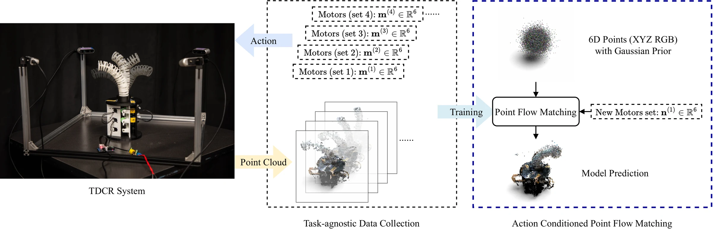
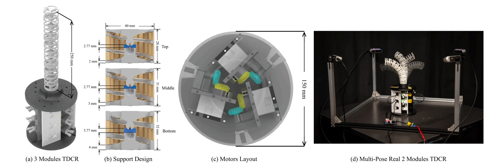
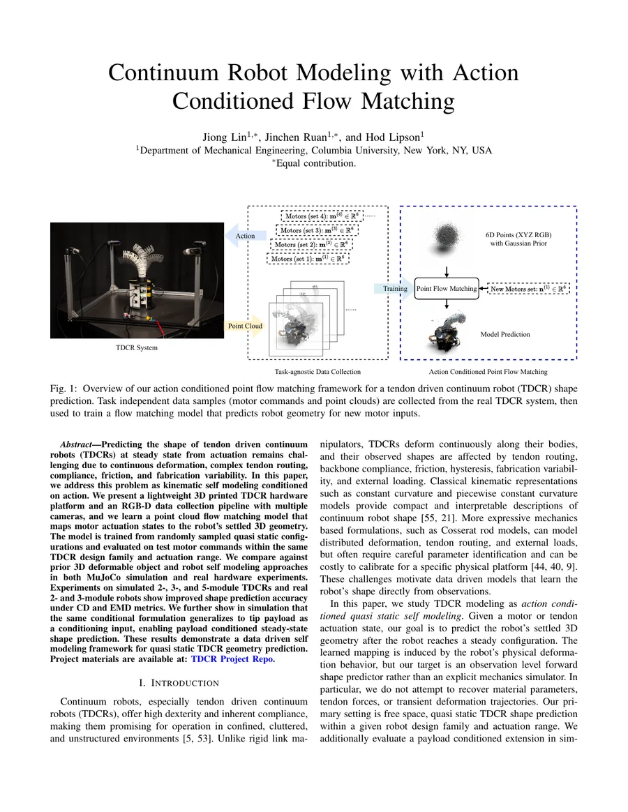

{kind=link}
TDCR platform and capture pipeline
A configurable 3D printed TDCR platform with multi-view RGB-D capture for real hardware self-modeling data.
A point-cloud flow matching self-model that predicts the settled 3D geometry of tendon-driven continuum robots directly from motor actuation states.
1Department of Mechanical Engineering, Columbia University · *Equal contribution

Overview
Tendon-driven continuum robots deform continuously along compliant backbones, and their observed shape is affected by tendon routing, friction, fabrication variability, and external loading. This project treats steady-state TDCR modeling as action-conditioned quasi-static self modeling: given a motor command, the model predicts the robot's settled full-body point cloud.
The system combines a lightweight 3D printed TDCR hardware platform, multi-camera RGB-D data collection, and a conditional flow matching model that transports a Gaussian point set into the observed robot geometry.
Learn a conditional velocity field in point space. At inference, sample a Gaussian point cloud and integrate the learned ODE under a query motor condition to generate the predicted steady-state TDCR geometry.
A configurable 3D printed TDCR platform with multi-view RGB-D capture for real hardware self-modeling data.
A conditional point-cloud generative model that maps motor states, and optionally payload, to dense settled 3D geometry.
Systematic comparison against VSM, PointFlow/CNF, NeRF-style self simulation, and articulated 3D Gaussian Splatting baselines.
Method
The model is trained on pairs of settled point clouds and conditions. The condition is the normalized motor vector for standard experiments, and the motor vector concatenated with a normalized scalar payload in the payload-conditioned simulation extension.
Sample a Gaussian point cloud X0, pair it with a ground-truth settled point cloud X1, interpolate Xt = (1 - t)X0 + tX1, and regress the transport velocity X1 - X0.
Time and action embeddings are fused and injected with FiLM modulation. Two velocity networks are evaluated: a lightweight shared MLP and a Hybrid PVConv context model.
For a query condition, integrate the learned generative ODE from noise to the final point cloud using Heun RK2 sampling and EMA weights.

Hardware and data
Real hardware datasets are collected on physical 2-module and 3-module TDCRs. Four calibrated Intel RealSense D435 cameras surround the robot, fuse synchronized RGB-D views into a shared world frame, and produce colored point clouds for learning.
In simulation, MuJoCo TDCR scenes cover 2-, 3-, and 5-module morphologies with no-base and with-base observation settings. The same representation and normalization pipeline is used across simulation and hardware.
Results
Evaluation uses Chamfer Distance (CD) and Earth Mover's Distance (EMD) on metric-scale point clouds with 10,000 evaluation points. Lower is better.
Hybrid achieves the lowest CD and EMD across all six standard simulated settings.
64-96% CD reduction relative to the strongest non-ours baseline per settingThe best of the MLP and Hybrid variants improves over the strongest point-based baseline.
33.5% / 20.3% CD reduction on Real-2m / Real-3m versus PointFlowThe same conditional formulation extends to a scalar gravity-aligned tip payload in simulation.
Motor + payload as the conditioning vector| Method | 2m-NB CD | 2m-WB CD | 3m-NB CD | 3m-WB CD | 5m-NB CD | 5m-WB CD | 2m-NB EMD | 2m-WB EMD | 3m-NB EMD | 3m-WB EMD | 5m-NB EMD | 5m-WB EMD |
|---|---|---|---|---|---|---|---|---|---|---|---|---|
| VSM | 14.773 | 10.065 | 92.509 | 32.494 | 105.017 | 12.827 | 5.795 | 4.881 | 19.990 | 7.386 | 19.470 | 7.112 |
| PointFlow | 0.359 | 0.461 | 2.172 | 1.013 | 19.790 | 6.788 | 0.598 | 1.041 | 1.362 | 1.203 | 5.453 | 3.227 |
| NeRF | 0.341 | 0.953 | 0.650 | 0.974 | 6.552 | 4.309 | 1.009 | 2.263 | 2.958 | 2.035 | 9.753 | 15.854 |
| 3DGS | 0.447 | 0.373 | 1.053 | 1.205 | 19.201 | 63.781 | 0.461 | 3.779 | 0.847 | 4.837 | 4.849 | 14.652 |
| Ours (MLP) | 0.100 | 0.147 | 0.158 | 0.194 | 0.260 | 0.260 | 0.230 | 0.587 | 0.349 | 0.672 | 0.870 | 1.110 |
| Ours (Hybrid) | 0.088 | 0.135 | 0.136 | 0.164 | 0.253 | 0.239 | 0.204 | 0.516 | 0.329 | 0.578 | 0.832 | 1.059 |
| Method | Real-2m CD | Real-3m CD | Real-2m EMD | Real-3m EMD |
|---|---|---|---|---|
| VSM | 2.287 | 1.525 | 4.426 | 5.363 |
| PointFlow | 0.340 | 0.266 | 0.828 | 0.672 |
| NeRF | 9.569 | 10.377 | 11.111 | 9.251 |
| 3DGS | 1.030 | 0.809 | 12.592 | 14.952 |
| Ours (MLP) | 0.226 | 0.215 | 0.522 | 0.507 |
| Ours (Hybrid) | 0.234 | 0.212 | 0.575 | 0.548 |
| Method | 2m CD | 3m CD | 5m CD | 2m EMD | 3m EMD | 5m EMD |
|---|---|---|---|---|---|---|
| Ours (MLP) | 0.393 | 0.386 | 0.741 | 0.992 | 0.826 | 1.272 |
| Ours (Hybrid) | 0.340 | 0.378 | 1.780 | 0.709 | 0.701 | 1.290 |
Code and demo
The repository implements the TDCR dataset pipeline, action-conditioned flow matching training, and checkpoint-based demo inference in PyTorch.
conda create -y -n tdcr python=3.12
conda activate tdcr
pip install -r requirements.txtmkdir -p checkpoints
wget -O tdcr-checkpoints.zip \
https://anonymous-for-submit.s3.us-east-1.amazonaws.com/tdcr-checkpoints.zip
unzip -o tdcr-checkpoints.zip -d checkpoints
rm tdcr-checkpoints.zippython demo.py \
--ckpt checkpoints/real_2m_with_base_hybrid.pt \
--test_dir demo/test/real_2m_with_base \
--demo_out test_demo/real_2m_with_base_hybrid \
--eval_norm_json sim/dataset_norm_json/real_2m_with_base.json \
--sample_steps 100 \
--batch_size 16Paper
The PDF included here was compiled from the provided Overleaf project. Replace it with the camera-ready or arXiv version when that version is available.

Citation
Use this placeholder BibTeX entry until the final RSS proceedings metadata is available.
@inproceedings{lin2026continuum,
title = {Continuum Robot Modeling with Action Conditioned Flow Matching},
author = {Lin, Jiong and Ruan, Jinchen and Lipson, Hod},
booktitle = {Robotics: Science and Systems (RSS)},
year = {2026}
}{kind=link}
{kind=link}
{kind=link}
{kind=link}
{kind=link}